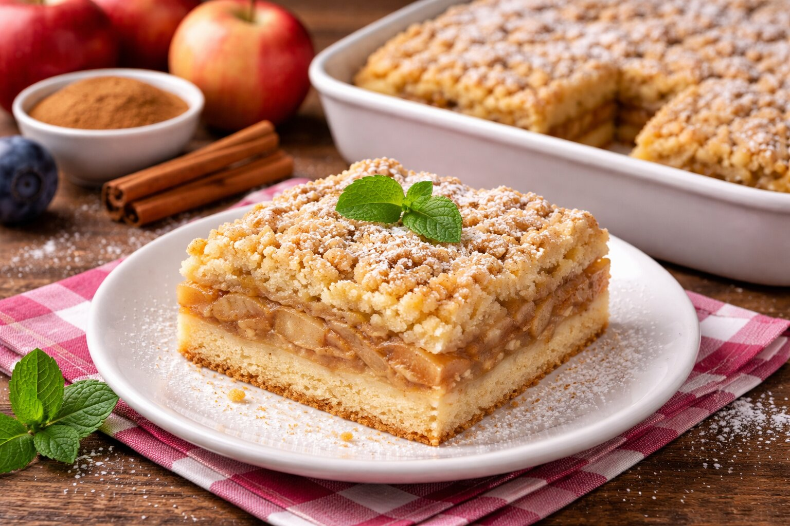

Suroviny
- 3 vajcia
- 200 g kryštálového cukru
- 250 g polohrubej múky
- 100 ml oleja
- 100 ml mlieka
- 1 balíček prášku do pečiva
- 4–5 jabĺk
- Škorica podľa chuti
- Vanilkový cukor
- Práškový cukor na posypanie
Postup
- Jablká ošúpeme, zbavíme jadrovníkov a nakrájame na tenké plátky.
- Vajcia vyšľaháme s cukrom a vanilkovým cukrom do peny.
- Pridáme olej, mlieko a postupne vmiešame múku zmiešanú s práškom do pečiva.
- Cesto vylejeme na plech vystlaný papierom na pečenie.
- Na vrch rovnomerne poukladáme jablká a posypeme škoricou.
- Pečieme v predhriatej rúre na 180 °C asi 30–35 minút.
- Po vychladnutí posypeme práškovým cukrom a podávame.